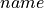

Assembly of Plate and Panel Models (compmech.panel.assembly)¶
-
class
compmech.panel.assembly.PanelAssembly(panels)[source]¶ Class for Panel Assemblies
This class has some useful methods that will help plotting output for different panel groups within the assembly and so forth.
For more details about the theory involved, see [castro2017AssemblyModels].
- Parameters
- panelsiterable
A list, tuple etc of
Panelobjects.- conndict
A connectivity dictionary.
Methods
calc_k0(self[, conn, c, silent, finalize, inc])Calculate the constitutive stiffness matrix of the assembly
calc_kG0(self[, c, silent, finalize])Calculate the geometric stiffness matrix of the assembly
plot(self, c, group[, invert_y, vec, …])Contour plot for a Ritz constants vector.
strain(self, c, group[, gridx, gridy, NLterms])Calculate the strain field
stress(self, c, group[, gridx, gridy, NLterms])Calculate the stress field
uvw(self, c, group[, gridx, gridy])Calculate the displacement field
calc_fext
calc_fint
calc_kM
calc_kT
get_k0_conn
get_size
-
calc_k0(self, conn=None, c=None, silent=False, finalize=True, inc=1.0)[source]¶ Calculate the constitutive stiffness matrix of the assembly
- Parameters
- conndict, optional
A connectivity dictionary. Optional if already defined for the assembly.
- carray-like or None, optional
This must be the result of a static analysis, used to compute non-linear terms based on the actual displacement field.
- silentbool, optional
A boolean to tell whether the log messages should be printed.
- finalizebool, optional
Asserts validity of output data and makes the output matrix symmetric, should be
Falsewhen assemblying.- incfloat, optional
Dummy argument needed for non-linear analyses.
-
calc_kG0(self, c=None, silent=False, finalize=True)[source]¶ Calculate the geometric stiffness matrix of the assembly
- Parameters
- carray-like or None, optional
This must be the result of a static analysis, used to compute non-linear terms based on the actual displacement field.
- silentbool, optional
A boolean to tell whether the log messages should be printed.
- finalizebool, optional
Asserts validity of output data and makes the output matrix symmetric, should be
Falsewhen assemblying.
-
plot(self, c, group, invert_y=False, vec='w', filename='', ax=None, figsize=(3.5, 2.0), save=True, title='', identify=False, show_boundaries=False, boundary_line='--k', boundary_linewidth=1.0, colorbar=False, cbar_nticks=2, cbar_format=None, cbar_title='', cbar_fontsize=10, colormap='jet', aspect='equal', clean=True, dpi=400, texts=[], xs=None, ys=None, gridx=50, gridy=50, num_levels=400, vecmin=None, vecmax=None, calc_data_only=False)[source]¶ Contour plot for a Ritz constants vector.
- Parameters
- cnp.ndarray
The Ritz constants that will be used to compute the field contour.
- groupstr
A group to plot. Each panel in
panelsshould contain an attributegroup, which is used to identify which entities should be plotted together.- vecstr, optional
Can be one of the components:
Displacement:
'u','v','w','phix','phiy'Strain:
'exx','eyy','gxy','kxx','kyy','kxy','gyz','gxz'Stress:
'Nxx','Nyy','Nxy','Mxx','Myy','Mxy','Qy','Qx'
- invert_ybool, optional
Inverts the
 axis of the plot.
axis of the plot.- savebool, optional
Flag telling whether the contour should be saved to an image file.
- dpiint, optional
Resolution of the saved file in dots per inch.
- filenamestr, optional
The file name for the generated image file. If no value is given, the  parameter of the
Panelobject will be used.- axAxesSubplot, optional
When
axis given, the contour plot will be created inside it.- figsizetuple, optional
The figure size given by
(width, height).- titlestr, optional
If any string is given a title is added to the contour plot.
- indentifybool, optional
If domains should be identified. If yes, the name of each panel is used.
- show_boundariesbool, optional
If boundaries between domains should be drawn.
- boundary_linestr, optional
Matplotlib string to define line type and color.
- boundary_linewidthfloat, optional
Matplotlib float to define line width.
- colorbarbool, optional
If a colorbar should be added to the contour plot.
- cbar_nticksint, optional
Number of ticks added to the colorbar.
- cbar_format[ None | format string | Formatter object ], optional
See the
matplotlib.pyplot.colorbardocumentation.- cbar_titlestr, optional
Colorbar title. If
cbar_title == ''no title is added.- cbar_fontsizeint, optional
Fontsize of the colorbar labels.
- colormapstring, optional
Name of a matplotlib available colormap.
- aspectstr, optional
String that will be passed to the
AxesSubplot.set_aspect()method.- cleanbool, optional
Clean axes ticks, grids, spines etc.
- xsnp.ndarray, optional
The
 positions where to calculate the displacement field.
Default is
positions where to calculate the displacement field.
Default is Noneand the method_default_fieldis used.- ysnp.ndarray, optional
The
ypositions where to calculate the displacement field. Default isNoneand the method_default_fieldis used.- gridxint, optional
Number of points along the
axis where to calculate the
displacement field.- gridyint, optional
Number of points along the
where to calculate the
displacement field.- num_levelsint, optional
Number of contour levels (higher values make the contour smoother).
- vecminfloat, optional
Minimum value for the contour scale (useful to compare with other results). If not specified it will be taken from the calculated field.
- vecmaxfloat, optional
Maximum value for the contour scale.
- calc_data_onlybool, optional
If only calculated data should be returned.
- Returns
- axmatplotlib.axes.Axes
The Matplotlib object that can be used to modify the current plot if needed.
- datadict
Data calculated during the plotting procedure.
-
strain(self, c, group, gridx=50, gridy=50, NLterms=True)[source]¶ Calculate the strain field
- Parameters
- cfloat
The full set of Ritz constants
- groupstr
A group to plot. Each panel in
panelsshould contain an attributegroup, which is used to identify which entities should be plotted together.- gridxint, optional
Number of points along the
axis where to calculate the
displacement field.- gridyint, optional
Number of points along the
where to calculate the
displacement field.- NLtermsbool
Flag to indicate whether non-linear strain components should be considered.
- Returns
- outdict
A dictionary of
np.ndarrayswith the keys:(x, y, exx, eyy, gxy, kxx, kyy, kxy).
-
stress(self, c, group, gridx=50, gridy=50, NLterms=True)[source]¶ Calculate the stress field
- Parameters
- cfloat
The full set of Ritz constants
- groupstr
A group to plot. Each panel in
panelsshould contain an attributegroup, which is used to identify which entities should be plotted together.- gridxint, optional
Number of points along the
axis where to calculate the
displacement field.- gridyint, optional
Number of points along the
where to calculate the
displacement field.- NLtermsbool
Flag to indicate whether non-linear strain components should be considered.
- Returns
- outdict
A dict containing many
np.ndarrays, with the keys:(x, y, Nxx, Nyy, Nxy, Mxx, Myy, Mxy).
-
uvw(self, c, group, gridx=50, gridy=50)[source]¶ Calculate the displacement field
For a given full set of Ritz constants
c, the displacement field is calculated and stored in the parametersu,v,w,phix,phiyof thePanelobject.- Parameters
- cfloat
The full set of Ritz constants
- groupstr
A group to plot. Each panel in
panelsshould contain an attributegroup, which is used to identify which entities should be plotted together.- gridxint, optional
Number of points along the
axis where to calculate the
displacement field.- gridyint, optional
Number of points along the
where to calculate the
displacement field.
- Returns
- outtuple
A tuple of
np.ndarrayscontaining(xs, ys, u, v, w, phix, phiy).
Notes
The returned values
u`,v,w,phix,phiyare stored as parameters with the same name in thePanelobject.